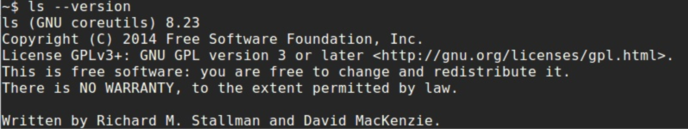

System calls in the Linux kernel. Part 4.
How does the Linux kernel run a program
This is the fourth part of the chapter that describes system calls in the Linux kernel and as I wrote in the conclusion of the previous - this part will be last in this chapter. In the previous part we stopped at the two new concepts:
vsyscall;vDSO;
that are related and very similar on system call concept.
This part will be last part in this chapter and as you can understand from the part's title - we will see what does occur in the Linux kernel when we run our programs. So, let's start.
how do we launch our programs?
There are many different ways to launch an application from a user perspective. For example we can run a program from the shell or double-click on the application icon. It does not matter. The Linux kernel handles application launch regardless how we do launch this application.
In this part we will consider the way when we just launch an application from the shell. As you know, the standard way to launch an application from shell is the following: We just launch a terminal emulator application and just write the name of the program and pass or not arguments to our program, for example:

Let's consider what does occur when we launch an application from the shell, what does shell do when we write program name, what does Linux kernel do etc. But before we will start to consider these interesting things, I want to warn that this book is about the Linux kernel. That's why we will see Linux kernel insides related stuff mostly in this part. We will not consider in details what does shell do, we will not consider complex cases, for example subshells etc.
My default shell is - bash, so I will consider how do bash shell launches a program. So let's start. The bash shell as well as any program that written with C programming language starts from the main function. If you will look on the source code of the bash shell, you will find the main function in the shell.c source code file. This function makes many different things before the main thread loop of the bash started to work. For example this function:
- checks and tries to open
/dev/tty; - check that shell running in debug mode;
- parses command line arguments;
- reads shell environment;
- loads
.bashrc,.profileand other configuration files; - and many many more.
After all of these operations we can see the call of the reader_loop function. This function defined in the eval.c source code file and represents main thread loop or in other words it reads and executes commands. As the reader_loop function made all checks and read the given program name and arguments, it calls the execute_command function from the execute_cmd.c source code file. The execute_command function through the chain of the functions calls:
execute_command
--> execute_command_internal
----> execute_simple_command
------> execute_disk_command
--------> shell_execve
makes different checks like do we need to start subshell, was it builtin bash function or not etc. As I already wrote above, we will not consider all details about things that are not related to the Linux kernel. In the end of this process, the shell_execve function calls the execve system call:
execve (command, args, env);
The execve system call has the following signature:
int execve(const char *filename, char *const argv [], char *const envp[]);
and executes a program by the given filename, with the given arguments and environment variables. This system call is the first in our case and only, for example:
$ strace ls
execve("/bin/ls", ["ls"], [/* 62 vars */]) = 0
$ strace echo
execve("/bin/echo", ["echo"], [/* 62 vars */]) = 0
$ strace uname
execve("/bin/uname", ["uname"], [/* 62 vars */]) = 0
So, a user application (bash in our case) calls the system call and as we already know the next step is Linux kernel.
execve system call
We saw preparation before a system call called by a user application and after a system call handler finished its work in the second part of this chapter. We stopped at the call of the execve system call in the previous paragraph. This system call defined in the fs/exec.c source code file and as we already know it takes three arguments:
SYSCALL_DEFINE3(execve,
const char __user *, filename,
const char __user *const __user *, argv,
const char __user *const __user *, envp)
{
return do_execve(getname(filename), argv, envp);
}
Implementation of the execve is pretty simple here, as we can see it just returns the result of the do_execve function. The do_execve function defined in the same source code file and do the following things:
- Initialize two pointers on a userspace data with the given arguments and environment variables;
- return the result of the
do_execveat_common.
We can see its implementation:
struct user_arg_ptr argv = { .ptr.native = __argv };
struct user_arg_ptr envp = { .ptr.native = __envp };
return do_execveat_common(AT_FDCWD, filename, argv, envp, 0);
The do_execveat_common function does main work - it executes a new program. This function takes similar set of arguments, but as you can see it takes five arguments instead of three. The first argument is the file descriptor that represent directory with our application, in our case the AT_FDCWD means that the given pathname is interpreted relative to the current working directory of the calling process. The fifth argument is flags. In our case we passed 0 to the do_execveat_common. We will check in a next step, so will see it later.
First of all the do_execveat_common function checks the filename pointer and returns if it is NULL. After this we check flags of the current process that limit of running processes is not exceeded:
if (IS_ERR(filename))
return PTR_ERR(filename);
if ((current->flags & PF_NPROC_EXCEEDED) &&
atomic_read(¤t_user()->processes) > rlimit(RLIMIT_NPROC)) {
retval = -EAGAIN;
goto out_ret;
}
current->flags &= ~PF_NPROC_EXCEEDED;
If these two checks were successful we unset PF_NPROC_EXCEEDED flag in the flags of the current process to prevent fail of the execve. You can see that in the next step we call the unshare_files function that defined in the kernel/fork.c and unshares the files of the current task and check the result of this function:
retval = unshare_files(&displaced);
if (retval)
goto out_ret;
We need to call this function to eliminate potential leak of the execve'd binary's file descriptor. In the next step we start preparation of the bprm that represented by the struct linux_binprm structure (defined in the include/linux/binfmts.h header file). The linux_binprm structure is used to hold the arguments that are used when loading binaries. For example it contains vma field which has vm_area_struct type and represents single memory area over a contiguous interval in a given address space where our application will be loaded, mm field which is memory descriptor of the binary, pointer to the top of memory and many other different fields.
First of all we allocate memory for this structure with the kzalloc function and check the result of the allocation:
bprm = kzalloc(sizeof(*bprm), GFP_KERNEL);
if (!bprm)
goto out_files;
After this we start to prepare the binprm credentials with the call of the prepare_bprm_creds function:
retval = prepare_bprm_creds(bprm);
if (retval)
goto out_free;
check_unsafe_exec(bprm);
current->in_execve = 1;
Initialization of the binprm credentials in other words is initialization of the cred structure that stored inside of the linux_binprm structure. The cred structure contains the security context of a task for example real uid of the task, real guid of the task, uid and guid for the virtual file system operations etc. In the next step as we executed preparation of the bprm credentials we check that now we can safely execute a program with the call of the check_unsafe_exec function and set the current process to the in_execve state.
After all of these operations we call the do_open_execat function that checks the flags that we passed to the do_execveat_common function (remember that we have 0 in the flags) and searches and opens executable file on disk, checks that our we will load a binary file from noexec mount points (we need to avoid execute a binary from filesystems that do not contain executable binaries like proc or sysfs), initializes file structure and returns pointer on this structure. Next we can see the call the sched_exec after this:
file = do_open_execat(fd, filename, flags);
retval = PTR_ERR(file);
if (IS_ERR(file))
goto out_unmark;
sched_exec();
The sched_exec function is used to determine the least loaded processor that can execute the new program and to migrate the current process to it.
After this we need to check file descriptor of the give executable binary. We try to check does the name of the our binary file starts from the / symbol or does the path of the given executable binary is interpreted relative to the current working directory of the calling process or in other words file descriptor is AT_FDCWD (read above about this).
If one of these checks is successful we set the binary parameter filename:
bprm->file = file;
if (fd == AT_FDCWD || filename->name[0] == '/') {
bprm->filename = filename->name;
}
Otherwise if the filename is empty we set the binary parameter filename to the /dev/fd/%d or /dev/fd/%d/%s depends on the filename of the given executable binary which means that we will execute the file to which the file descriptor refers:
} else {
if (filename->name[0] == '\0')
pathbuf = kasprintf(GFP_TEMPORARY, "/dev/fd/%d", fd);
else
pathbuf = kasprintf(GFP_TEMPORARY, "/dev/fd/%d/%s",
fd, filename->name);
if (!pathbuf) {
retval = -ENOMEM;
goto out_unmark;
}
bprm->filename = pathbuf;
}
bprm->interp = bprm->filename;
Note that we set not only the bprm->filename but also bprm->interp that will contain name of the program interpreter. For now we just write the same name there, but later it will be updated with the real name of the program interpreter depends on binary format of a program. You can read above that we already prepared cred for the linux_binprm. The next step is initialization of other fields of the linux_binprm. First of all we call the bprm_mm_init function and pass the bprm to it:
retval = bprm_mm_init(bprm);
if (retval)
goto out_unmark;
The bprm_mm_init defined in the same source code file and as we can understand from the function's name, it makes initialization of the memory descriptor or in other words the bprm_mm_init function initializes mm_struct structure. This structure defined in the include/linux/mm_types.h header file and represents address space of a process. We will not consider implementation of the bprm_mm_init function because we do not know many important stuff related to the Linux kernel memory manager, but we just need to know that this function initializes mm_struct and populate it with a temporary stack vm_area_struct.
After this we calculate the count of the command line arguments which were passed to our executable binary, the count of the environment variables and set it to the bprm->argc and bprm->envc respectively:
bprm->argc = count(argv, MAX_ARG_STRINGS);
if ((retval = bprm->argc) < 0)
goto out;
bprm->envc = count(envp, MAX_ARG_STRINGS);
if ((retval = bprm->envc) < 0)
goto out;
As you can see we do this operations with the help of the count function that defined in the same source code file and calculates the count of strings in the argv array. The MAX_ARG_STRINGS macro defined in the include/uapi/linux/binfmts.h header file and as we can understand from the macro's name, it represents maximum number of strings that were passed to the execve system call. The value of the MAX_ARG_STRINGS:
#define MAX_ARG_STRINGS 0x7FFFFFFF
After we calculated the number of the command line arguments and environment variables, we call the prepare_binprm function. We already call the function with the similar name before this moment. This function is called prepare_binprm_cred and we remember that this function initializes cred structure in the linux_bprm. Now the prepare_binprm function:
retval = prepare_binprm(bprm);
if (retval < 0)
goto out;
fills the linux_binprm structure with the uid from inode and read 128 bytes from the binary executable file. We read only first 128 from the executable file because we need to check a type of our executable. We will read the rest of the executable file in the later step. After the preparation of the linux_bprm structure we copy the filename of the executable binary file, command line arguments and environment variables to the linux_bprm with the call of the copy_strings_kernel function:
retval = copy_strings_kernel(1, &bprm->filename, bprm);
if (retval < 0)
goto out;
retval = copy_strings(bprm->envc, envp, bprm);
if (retval < 0)
goto out;
retval = copy_strings(bprm->argc, argv, bprm);
if (retval < 0)
goto out;
And set the pointer to the top of new program's stack that we set in the bprm_mm_init function:
bprm->exec = bprm->p;
The top of the stack will contain the program filename and we store this filename to the exec field of the linux_bprm structure.
Now we have filled linux_bprm structure, we call the exec_binprm function:
retval = exec_binprm(bprm);
if (retval < 0)
goto out;
First of all we store the pid and pid that seen from the namespace of the current task in the exec_binprm:
old_pid = current->pid;
rcu_read_lock();
old_vpid = task_pid_nr_ns(current, task_active_pid_ns(current->parent));
rcu_read_unlock();
and call the:
search_binary_handler(bprm);
function. This function goes through the list of handlers that contains different binary formats. Currently the Linux kernel supports the following binary formats:
binfmt_script- support for interpreted scripts that are starts from the #! line;binfmt_misc- support different binary formats, according to runtime configuration of the Linux kernel;binfmt_elf- support elf format;binfmt_aout- support a.out format;binfmt_flat- support for flat format;binfmt_elf_fdpic- Support for elf FDPIC binaries;binfmt_em86- support for Intel elf binaries running on Alpha machines.
So, the search_binary_handler tries to call the load_binary function and pass linux_binprm to it. If the binary handler supports the given executable file format, it starts to prepare the executable binary for execution:
int search_binary_handler(struct linux_binprm *bprm)
{
...
...
...
list_for_each_entry(fmt, &formats, lh) {
retval = fmt->load_binary(bprm);
if (retval < 0 && !bprm->mm) {
force_sigsegv(SIGSEGV, current);
return retval;
}
}
return retval;
Where the load_binary for example for the elf checks the magic number (each elf binary file contains magic number in the header) in the linux_bprm buffer (remember that we read first 128 bytes from the executable binary file): and exit if it is not elf binary:
static int load_elf_binary(struct linux_binprm *bprm)
{
...
...
...
loc->elf_ex = *((struct elfhdr *)bprm->buf);
if (memcmp(elf_ex.e_ident, ELFMAG, SELFMAG) != 0)
goto out;
If the given executable file is in elf format, the load_elf_binary continues to execute. The load_elf_binary does many different things to prepare on execution executable file. For example it checks the architecture and type of the executable file:
if (loc->elf_ex.e_type != ET_EXEC && loc->elf_ex.e_type != ET_DYN)
goto out;
if (!elf_check_arch(&loc->elf_ex))
goto out;
and exit if there is wrong architecture and executable file non executable non shared. Tries to load the program header table:
elf_phdata = load_elf_phdrs(&loc->elf_ex, bprm->file);
if (!elf_phdata)
goto out;
that describes segments. Read the program interpreter and libraries that linked with the our executable binary file from disk and load it to memory. The program interpreter specified in the .interp section of the executable file and as you can read in the part that describes Linkers it is - /lib64/ld-linux-x86-64.so.2 for the x86_64. It setups the stack and map elf binary into the correct location in memory. It maps the bss and the brk sections and does many many other different things to prepare executable file to execute.
In the end of the execution of the load_elf_binary we call the start_thread function and pass three arguments to it:
start_thread(regs, elf_entry, bprm->p);
retval = 0;
out:
kfree(loc);
out_ret:
return retval;
These arguments are:
- Set of registers for the new task;
- Address of the entry point of the new task;
- Address of the top of the stack for the new task.
As we can understand from the function's name, it starts new thread, but it is not so. The start_thread function just prepares new task's registers to be ready to run. Let's look on the implementation of this function:
void
start_thread(struct pt_regs *regs, unsigned long new_ip, unsigned long new_sp)
{
start_thread_common(regs, new_ip, new_sp,
__USER_CS, __USER_DS, 0);
}
As we can see the start_thread function just makes a call of the start_thread_common function that will do all for us:
static void
start_thread_common(struct pt_regs *regs, unsigned long new_ip,
unsigned long new_sp,
unsigned int _cs, unsigned int _ss, unsigned int _ds)
{
loadsegment(fs, 0);
loadsegment(es, _ds);
loadsegment(ds, _ds);
load_gs_index(0);
regs->ip = new_ip;
regs->sp = new_sp;
regs->cs = _cs;
regs->ss = _ss;
regs->flags = X86_EFLAGS_IF;
force_iret();
}
The start_thread_common function fills fs segment register with zero and es and ds with the value of the data segment register. After this we set new values to the instruction pointer, cs segments etc. In the end of the start_thread_common function we can see the force_iret macro that forces a system call return via iret instruction. Ok, we prepared new thread to run in userspace and now we can return from the exec_binprm and now we are in the do_execveat_common again. After the exec_binprm will finish its execution we release memory for structures that was allocated before and return.
After we returned from the execve system call handler, execution of our program will be started. We can do it, because all context related information is already configured for this purpose. As we saw the execve system call does not return control to a process, but code, data and other segments of the caller process are just overwritten of the program segments. The exit from our application will be implemented through the exit system call.
That's all. From this point our program will be executed.
Conclusion
This is the end of the fourth part of the about the system calls concept in the Linux kernel. We saw almost all related stuff to the system call concept in these four parts. We started from the understanding of the system call concept, we have learned what is it and why do users applications need in this concept. Next we saw how does the Linux handle a system call from a user application. We met two similar concepts to the system call concept, they are vsyscall and vDSO and finally we saw how does Linux kernel run a user program.
If you have questions or suggestions, feel free to ping me in twitter 0xAX, drop me email or just create issue.
Please note that English is not my first language and I am really sorry for any inconvenience. If you found any mistakes please send me PR to linux-insides.